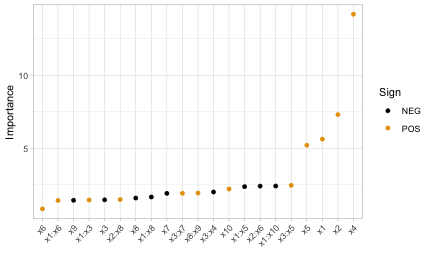
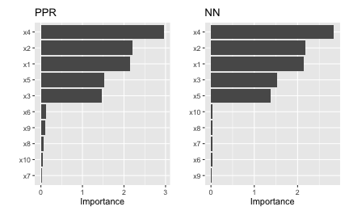
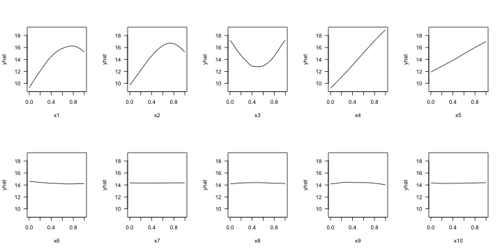

This vignette is essentially an up-to-date version of B. M. Greenwell and Boehmke (2020). Please use that if you’d like to cite our work.
Introduction
Too often machine learning (ML) models are summarized using a single metric (e.g., cross-validated accuracy) and then put into production. Although we often care about the predictions from these models, it is becoming routine (and good practice) to also better understand the predictions! Understanding how an ML model makes its predictions helps build trust in the model and is the fundamental idea of the emerging field of interpretable machine learning (IML).1 For an in-depth discussion on IML, see Molnar (2019b). In this paper, we focus on global methods for quantifying the importance2 of features in an ML model; that is, methods that help us understand the global contribution each feature has to a model’s predictions. Computing variable importance (VI) and communicating them through variable importance plots (VIPs) is a fundamental component of IML and is the main topic of this paper.
While many of the procedures discussed in this paper apply to any model that makes predictions, it should be noted that these methods heavily depend on the accuracy and importance of the fitted model; hence, unimportant features may appear relatively important (albeit not predictive) in comparison to the other included features. For this reason, we stress the usefulness of understanding the scale on which VI scores are calculated and take that into account when assessing the importance of each feature and communicating the results to others. Also, we should point out that this work focuses mostly on post-hoc interpretability where a trained model is given and the goal is to understand what features are driving the model’s predictions. Consequently, our work focuses on functional understanding of the model in contrast to the lower-level mechanistic understanding (Montavon, Samek, and Müller 2018). That is, we seek to explain the relationship between the model’s prediction behavior and features without explaining the full internal representation of the model.3
VI scores and VIPs can be constructed for general ML models using a number of available packages. The iml package (Molnar 2019a) provides the FeatureImp() function which computes feature importance for general prediction models using the permutation approach (discussed later). It is written in R6 (Chang 2019) and allows the user to specify a generic loss function or select one from a pre-defined list (e.g., for mean squared error). It also allows the user to specify whether importance is measured as the difference or as the ratio of the original model error and the model error after permutation. The user can also specify the number of repetitions used when permuting each feature to help stabilize the variability in the procedure. The function can also be run in parallel using any parallel backend supported by the foreach package (Revolution Analytics and Weston, n.d.).
The ingredients package (Biecek, Baniecki, and Izdebski 2019) also provides permutation-based VI scores through the feature_importance() function. (Note that this function recently replaced the now deprecated DALEX function variable_importance() (Biecek 2019).) Similar to iml::FeatureImp(), this function allows the user to specify a loss function and how the importance scores are computed (e.g., using the difference or ratio). It also provides an option to sample the training data before shuffling the data to compute importance (the default is to use n_sample = 1000), which can help speed up computation.
The mmpf package (Jones 2018) also provides permutation-based VI scores via the mmpf::permutationImportance() function. Similar to the iml and ingredients implementation, this function is flexible enough to be applied to any class of ML models in R.
The varImp package (Probst 2019) extends the permutation-based method for RFs in package party (Hothorn et al. 2019) to arbitrary measures from the measures package (Probst 2018). Additionally, the functions in varImp include the option of using the conditional approach described in Strobl et al. (2008) which is more reliable in the presence of correlated features. A number of other RF-specific VI packages exist on CRAN, including, but not limited to, vita (Celik 2015), rfVarImpOOB (Loecher 2019), randomForestExplainer (Paluszynska, Biecek, and Jiang 2019), and tree.interpreter (Sun 2019).4.
The caret package (Kuhn 2020) includes a general varImp() function for computing model-specific and filter-based VI scores. Filter-based approaches, which are described in Kuhn and Johnson (2013), do not make use of the fitted model to measure VI. They also do not take into account the other predictors in the model. For regression problems, a popular filter-based approach to measuring the VI of a numeric predictor \(x\) is to first fit a flexible nonparametric model between \(x\) and the target \(Y\); for example, the locally-weighted polynomial regression (LOWESS) method developed by Cleveland (1979). From this fit, a pseudo-\(R^2\) measure can be obtained from the resulting residuals and used as a measure of VI. For categorical predictors, a different method based on standard statistical tests (e.g., \(t\)-tests and ANOVAs) can be employed; see Kuhn and Johnson (2013) for details. For classification problems, an area under the ROC curve (AUC) statistic can be used to quantify predictor importance. The AUC statistic is computed by using the predictor \(x\) as input to the ROC curve. If \(x\) can reasonably separate the classes of \(Y\), that is a clear indicator that \(x\) is an important predictor (in terms of class separation) and this is captured in the corresponding AUC statistic. For problems with more than two classes, extensions of the ROC curve or a one-vs-all approach can be used.
If you use the mlr interface for fitting ML models (Bischl et al. 2020), then you can use the getFeatureImportance() function to extract model-specific VI scores from various tree-based models (e.g., RFs and GBMs). Unlike caret, the model needs to be fit via the mlr interface; for instance, you cannot use getFeatureImportance() on a ranger (Wright, Wager, and Probst 2020) model unless it was fit using mlr.
While the iml and DALEX packages provide model-agnostic approaches to computing VI, caret, and to some extent, mlr, provide model-specific approaches (e.g., using the absolute value of the \(t\)-statistic for linear models) as well as less accurate filter-based approaches. Furthermore, each package has a completely different interface (e.g., iml is written in R6). The vip package (B. Greenwell, Boehmke, and Gray 2019) strives to provide a consistent interface to both model-specific and model-agnostic approaches to feature importance that is simple to use. The three most important functions exported by vip are described below:
vi()computes VI scores using model-specific or model-agnostic approaches (the results are always returned as a tibble [Müller and Wickham (2019)});vip()constructs VIPs using model-specific or model-agnostic approaches with ggplot2-style graphics (Wickham et al. 2019);
Note that vi() is actually a wrapper around four workhorse functions, {vi_model(), vi_firm(), vi_permute(), and vi_shap(), that compute various types of VI scores. The first computes model-specific VI scores, while the latter three produce model-agnostic ones. The workhorse function that actually gets called is controlled by the method argument in vi(); the default is method = "model" which corresponds to model-specific VI (see ?vip::vi for details and links to further documentation).
Constructing VIPs in R
We’ll illustrate major concepts using the Friedman 1 benchmark problem described in Friedman (1991) and Breiman (1996):
\[\begin{equation} Y_i = 10 \sin\left(\pi X_{1i} X_{2i}\right) + 20 \left(X_{3i} - 0.5\right) ^ 2 + 10 X_{4i} + 5 X_{5i} + \epsilon_i, \quad i = 1, 2, \dots, n, \tag{1} \end{equation}\]
where \(\epsilon_i \stackrel{iid}{\sim} N\left(0, \sigma^2\right)\). Data from this model can be generated using the vip::gen_friedman(). By default, the features consist of 10 independent variables uniformly distributed on the interval \(\left[0,1\right]\); however, only 5 out of these 10 are actually used in the true model. The code chunk below simulates 500 observations from the model in Equation (1) with \(\sigma = 1\); see ?vip::gen_friedman for details.
trn <- vip::gen_friedman(500, sigma = 1, seed = 101) # simulate training data
tibble::as_tibble(trn) # inspect output## # A tibble: 500 × 11
## y x1 x2 x3 x4 x5 x6 x7 x8 x9 x10
## <dbl> <dbl> <dbl> <dbl> <dbl> <dbl> <dbl> <dbl> <dbl> <dbl> <dbl>
## 1 14.9 0.372 0.406 0.102 0.322 0.693 0.758 0.518 0.530 0.878 0.763
## 2 15.3 0.0438 0.602 0.602 0.999 0.776 0.533 0.509 0.487 0.118 0.176
## 3 15.1 0.710 0.362 0.254 0.548 0.0180 0.765 0.715 0.844 0.334 0.118
## 4 10.7 0.658 0.291 0.542 0.327 0.230 0.301 0.177 0.346 0.474 0.283
## 5 17.6 0.250 0.794 0.383 0.947 0.462 0.00487 0.270 0.114 0.489 0.311
## 6 18.3 0.300 0.701 0.992 0.386 0.666 0.198 0.924 0.775 0.736 0.974
## 7 14.6 0.585 0.365 0.283 0.488 0.845 0.466 0.715 0.202 0.905 0.640
## 8 17.0 0.333 0.552 0.858 0.509 0.697 0.388 0.260 0.355 0.517 0.165
## 9 8.54 0.622 0.118 0.490 0.390 0.468 0.360 0.572 0.891 0.682 0.717
## 10 15.0 0.546 0.150 0.476 0.706 0.829 0.373 0.192 0.873 0.456 0.694
## # ℹ 490 more rowsFrom Equation (1), it should be clear that features \(X_1\)–\(X_5\) are the most important! (The others don’t influence \(Y\) at all.) Also, based on the form of the model, we’d expect \(X_4\) to be the most important feature, probably followed by \(X_1\) and \(X_2\) (both comparably important), with \(X_5\) probably being less important. The influence of \(X_3\) is harder to determine due to its quadratic nature, but it seems likely that this nonlinearity will suppress the variable’s influence over its observed range (i.e., 0–1).
Model-specific VI
Some machine learning algorithms have their own way of quantifying the importance of each feature, which we refer to as model-specific VI. We describe some of these in the subsections that follow. One particular issue with model-specific VI scores is that they are not necessarily comparable across different types of models. For example, directly comparing the impurity-based VI scores from tree-based models to the the absolute value of the \(t\)-statistic in linear models.
Decision trees and tree ensembles
Decision trees probably offer the most natural model-specific approach to quantifying the importance of each feature. In a binary decision tree, at each node \(t\), a single predictor is used to partition the data into two homogeneous groups. The chosen predictor is the one that maximizes some measure of improvement \(i^t\). The relative importance of predictor \(X\) is the sum of the squared improvements over all internal nodes of the tree for which \(X\) was chosen as the partitioning variable; see Breiman, Friedman, and Charles J. Stone (1984) for details. This idea also extends to ensembles of decision trees, such as RFs and GBMs. In ensembles, the improvement score for each predictor is averaged across all the trees in the ensemble. Fortunately, due to the stabilizing effect of averaging, the improvement-based VI metric is often more reliable in large ensembles; see Hastie, Tibshirani, and Friedman (2009, 368).
RFs offer an additional method for computing VI scores. The idea is to use the leftover out-of-bag (OOB) data to construct validation-set errors for each tree. Then, each predictor is randomly shuffled in the OOB data and the error is computed again. The idea is that if variable \(X\) is important, then the validation error will go up when \(X\) is perturbed in the OOB data. The difference in the two errors is recorded for the OOB data then averaged across all trees in the forest. Note that both methods for constructing VI scores can be unreliable in certain situations; for example, when the predictor variables vary in their scale of measurement or their number of categories [Strobl et al. (2007), or when the predictors are highly correlated (Strobl et al. 2008). The varImp package discussed earlier provides methods to address these concerns for random forests in package party, with similar functionality also built into the partykit package (Hothorn and Zeileis 2019). The vip package also supports the conditional importance described in (Strobl et al. 2008) for both party- and partykit-based RFs; see ?vip::vi_model for details. Later on, we’ll discuss a more general permutation method that can be applied to any supervised learning model.
To illustrate, we fit a CART-like regression tree, RF, and GBM to the simulated training data. (Note: there are a number of different packages available for fitting these types of models, we just picked popular implementations for illustration.)
# Load required packages
library(rpart) # for fitting CART-like decision trees
library(randomForest) # for fitting RFs
library(xgboost) # for fitting GBMs
# Fit a single regression tree
tree <- rpart(y ~ ., data = trn)
# Fit an RF
set.seed(101) # for reproducibility
rfo <- randomForest(y ~ ., data = trn, importance = TRUE)
# Fit a GBM
set.seed(102) # for reproducibility
bst <- xgboost(
data = data.matrix(subset(trn, select = -y)),
label = trn$y,
objective = "reg:squarederror",
nrounds = 100,
max_depth = 5,
eta = 0.3,
verbose = 0 # suppress printing
)Each of the above packages include the ability to compute VI scores for all the features in the model; however, the implementation is rather package-specific, as shown in the code chunk below. The results are displayed in Figure ?? (the code to reproduce these plots has been omitted but can be made available upon request).
# Extract VI scores from each model
vi_tree <- tree$variable.importance
vi_rfo <- rfo$variable.importance # or use `randomForest::importance(rfo)`
vi_bst <- xgb.importance(model = bst)
As we would expect, all three methods rank the variables x1–x5 as more important than the others. While this is good news, it is unfortunate that we have to remember the different functions and ways of extracting and plotting VI scores from various model fitting functions. This is one place where vip can help…one function to rule them all! Once vip is loaded, we can use vi() to extract a tibble of VI scores.5
# Load required packages
library(vip)
# Compute model-specific VI scores
vi(tree) # CART-like decision tree## # A tibble: 10 × 2
## Variable Importance
## <chr> <dbl>
## 1 x4 4234.
## 2 x2 2513.
## 3 x1 2461.
## 4 x5 1230.
## 5 x3 688.
## 6 x6 533.
## 7 x7 357.
## 8 x9 331.
## 9 x8 276.
## 10 x10 275.
vi(rfo) # RF## # A tibble: 10 × 2
## Variable Importance
## <chr> <dbl>
## 1 x4 72.9
## 2 x2 61.4
## 3 x1 55.6
## 4 x5 37.0
## 5 x3 22.0
## 6 x8 1.84
## 7 x6 1.12
## 8 x9 0.720
## 9 x7 -1.39
## 10 x10 -2.61
vi(bst) # GBM## # A tibble: 10 × 2
## Variable Importance
## <chr> <dbl>
## 1 x4 0.403
## 2 x2 0.225
## 3 x1 0.189
## 4 x5 0.0894
## 5 x3 0.0682
## 6 x9 0.00802
## 7 x6 0.00746
## 8 x7 0.00400
## 9 x10 0.00377
## 10 x8 0.00262Notice how the vi() function always returns a tibble6 with two columns: Variable and Importance (the exceptions are coefficient-based models which also include a Sign column giving the sign of the corresponding coefficient, and permutation importance involving multiple Monte Carlo simulations, but more on that later). Also, by default, vi() always orders the VI scores from highest to lowest; this, among other options, can be controlled by the user (see ?vip::vi for details). Plotting VI scores with vip() is just as straightforward. For example, the following code can be used to reproduce Figure ??.
library(patchwork) # for easily arranging multiple ggplot2 plots
p1 <- vip(tree) + ggtitle("Single tree")
p2 <- vip(rfo) + ggtitle("Random forest")
p3 <- vip(bst) + ggtitle("Gradient boosting")
# Display plots in a grid (Figure 1)
p1 + p2 + p3Notice how the vip() function always returns a "ggplot" object (by default, this will be a bar plot). For large models with many features, a Cleveland dot plot is more effective (in fact, a number of useful plotting options can be fiddled with). Below we call vip() and change a few useful options (the resulting plot is displayed in Figure ??. Note that we can also call vip() directly on a "vi" object if it’s already been constructed.
# Construct VIP (Figure 2)
library(ggplot2) # for theme_light() function
vip(bst, num_features = 5, geom = "point", horizontal = FALSE,
aesthetics = list(color = "red", shape = 17, size = 5)) +
theme_light()Linear models
In multiple linear regression, or linear models (LMs), the absolute value of the \(t\)-statistic (or some other scaled variant of the estimated coefficients) is commonly used as a measure of VI.7. Motivation for the use of the assoicated \(t\)-statistic is given in Bring (1994). The same idea also extends to generalized linear models (GLMs). In the code chunk below, we fit an LM to the simulated Friedman data (trn) allowing for all main effects and two-way interactions, then use the step() function to perform backward elimination. The resulting VIP is displayed in Figure ??.
# Fit a LM
linmod <- lm(y ~ .^2, data = trn)
backward <- step(linmod, direction = "backward", trace = 0)
# Extract VI scores
(vi_backward <- vi(backward))## # A tibble: 21 × 3
## Variable Importance Sign
## <chr> <dbl> <chr>
## 1 x4 14.2 POS
## 2 x2 7.31 POS
## 3 x1 5.63 POS
## 4 x5 5.21 POS
## 5 x3:x5 2.46 POS
## 6 x1:x10 2.41 NEG
## 7 x2:x6 2.41 NEG
## 8 x1:x5 2.37 NEG
## 9 x10 2.21 POS
## 10 x3:x4 2.01 NEG
## # ℹ 11 more rows
# Plot VI scores; by default, `vip()` displays the top ten features
pal <- palette.colors(2, palette = "Okabe-Ito") # colorblind friendly palette
vip(vi_backward, num_features = length(coef(backward)), # Figure 3
geom = "point", horizontal = FALSE, mapping = aes(color = Sign)) +
scale_color_manual(values = unname(pal)) +
theme_light() +
theme(axis.text.x = element_text(angle = 45, hjust = 1))
A major limitation of this approach is that a VI score is assigned to each term in the model, rather than to each individual feature! We can solve this problem using one of the model-agnostic approaches discussed later.
Multivariate adaptive regression splines (MARS), which were introduced in Friedman (1991), is an automatic regression technique and can be seen as a generalization of LMs and GLMs. In the MARS algorithm, the contribution (or VI score) for each predictor is determined using a generalized cross-validation (GCV) statistic (though, other statistics can also be used; see for details). An example using the earth package (Milborrow 2019) is given below (the results are plotted in Figure ??):
# Load required packages
library(earth)
# Fit a MARS model
mars <- earth(y ~ ., data = trn, degree = 2, pmethod = "exhaustive")
# Extract VI scores
vi(mars, type = "gcv")## # A tibble: 10 × 2
## Variable Importance
## <chr> <dbl>
## 1 x4 100
## 2 x1 83.2
## 3 x2 83.2
## 4 x5 59.3
## 5 x3 43.5
## 6 x6 0
## 7 x7 0
## 8 x8 0
## 9 x9 0
## 10 x10 0
# Plot VI scores (Figure 4)
vip(mars)
To access VI scores directly in earth, you can use the earth::evimp() function.
Neural networks
For neural networks (NNs), two popular methods for constructing VI scores are the Garson algorithm (Garson 1991), later modified by Goh (1995), and the Olden algorithm (Olden, Joy, and Death 2004). For both algorithms, the basis of these VI scores is the network’s connection weights. The Garson algorithm determines VI by identifying all weighted connections between the nodes of interest. Olden’s algorithm, on the other hand, uses the products of the raw connection weights between each input and output neuron and sums these products across all hidden neurons. This has been shown to outperform the Garson method in various simulations. For DNNs, a similar method due to Gedeon (1997) considers the weights connecting the input features to the first two hidden layers (for simplicity and speed); but this method can be slow for large networks. We illustrate these two methods below using vip() with the nnet package (Ripley 2016) (see the results in Figure ??).
# Load required packages
library(nnet)
# Fit a neural network
set.seed(0803) # for reproducibility
nn <- nnet(y ~ ., data = trn, size = 7, decay = 0.1,
linout = TRUE, trace = FALSE)
# Construct VIPs
p1 <- vip(nn, type = "garson")
p2 <- vip(nn, type = "olden")
# Display plots in a grid (Figure 5)
p1 + p2
Model-agnostic VI
Model-agnostic interpretability separates interpretation from the model. Compared to model-specific approaches, model-agnostic VI methods are more flexible and can be applied to any supervised learning algorithm. In this section, we discuss model-agnostic methods for quantifying global feature importance using three different approaches:
- a simple variance-based approach;
- permutation-based feature importance;
- Shapley-based feature importance.
Variance-based methods
Our first model-agnostic method is based on a simple feature importance ranking measure (FIRM); for details, see B. M. Greenwell, Boehmke, and McCarthy (2018), Zien et al. (2009), and Scholbeck et al. (2019). The specific approach used here is based on quantifying the “flatness” of the effects of each feature.8 Feature effects can be assessed using partial dependence plots (PDPs) or individual conditional expectation (ICE) curves (Goldstein et al. 2015). PDPs and ICE curves help visualize the effect of low cardinality subsets of the feature space on the estimated prediction surface (e.g., main effects and two/three-way interaction effects.). They are also model-agnostic and can be constructed in the same way for any supervised learning algorithm. Below, we fit a projection pursuit regression (PPR) model (see ?stats::ppr for details and references) and construct PDPs for each feature using the pdp package B. M. Greenwell (2017). The results are displayed in Figure ??. Notice how the PDPs for the uninformative features are relatively flat compared to the PDPs for features x1–x5!

Next, we compute PDP-based VI scores for the fitted PPR and NN models. The PDP method constructs VI scores that quantify the relative “flatness” of each PDP (by default, this is defined by computing the standard deviation of the \(y\)-axis values for each PDP). To use the PDP method, specify method = "firm" in the call to vi() or vip() (or just use vi_firm() directly):
# Fit a PPR model (nterms was chosen using the caret package with 5 repeats of
# 5-fold cross-validation)
pp <- ppr(y ~ ., data = trn, nterms = 11)
# Construct VIPs
p1 <- vip(pp, method = "firm", train = trn) + ggtitle("PPR")
p2 <- vip(nn, method = "firm", train = trn) + ggtitle("NN")
# Display plots in a grid (Figure 7)
p1 + p2
In Figure ?? we display the PDP-based feature importance for the previously obtained PPR and NN models. These VI scores essentially capture the variability in the partial dependence values for each main effect.
The ICE curve method is similar to the PDP method, except that we measure the “flatness” of each individual ICE curve and then aggregate the results (e.g., by averaging). If there are no (substantial) interaction effects, using ICE curves will produce results similar to using PDPs (which are just averaged ICE curves). However, if strong interaction effects are present, they can obfuscate the main effects and render the PDP-based approach less useful (since the PDPs for important features can be relatively flat when certain interactions are present; see Goldstein et al. (2015) for details). In fact, it is probably safest to always use ICE curves when employing the FIRM method.
Below, we display the ICE curves for each feature in the fitted PPR model using the same \(y\)-axis scale; see Figure ??. Again, there is a clear difference between the ICE curves for features x1–x5 and x6–x10; the later being relatively flat by comparison. Also, notice how the ICE curves within each feature are relatively parallel (if the ICE curves within each feature were perfectly parallel, the standard deviation for each curve would be the same and the results will be identical to the PDP method). In this example, the interaction term between x1 and x2 does not obfuscate the PDPs for the main effects and the results are not much different.
Obtaining the ICE-based feature importance scores is also straightforward, just specify ice = TRUE when using the FIRM approach. This is illustrated in the code chunk below and the results, which are displayed in Figure ??, are similar to those obtained using the PDP method.
# Construct VIPs
p1 <- vip(pp, method = "firm", ice = TRUE, train = trn) + ggtitle("PPR")
p2 <- vip(nn, method = "firm", ice = TRUE, train = trn) + ggtitle("NN")
# Display plots in a grid (Figure 9)
p1 + p2When using method = "firm", the feature effect values are stored in an attribute called "effects". This is a convenience so that the feature effect plots (e.g., PDPs and ICE curves) can easily be reconstructed and compared with the VI scores, as demonstrated in the example below (see Figure ??):
# Construct PDP-based VI scores
(vis <- vi(pp, method = "firm", train = trn))## # A tibble: 10 × 2
## Variable Importance
## <chr> <dbl>
## 1 x4 2.96
## 2 x2 2.21
## 3 x1 2.14
## 4 x5 1.53
## 5 x3 1.46
## 6 x6 0.128
## 7 x9 0.114
## 8 x8 0.0621
## 9 x10 0.0374
## 10 x7 0.0170
# Reconstruct PDPs for all 10 features (Figure 10)
par(mfrow = c(2, 5))
for (name in paste0("x", 1:10)) {
plot(attr(vis, which = "effects")[[name]], type = "l", ylim = c(9, 19), las = 1)
}
Permutation method
The permutation method exists in various forms and was made popular in Breiman (2001) for RFs, before being generalized and extended in Fisher, Rudin, and Dominici (2018). The permutation approach used in vip is quite simple and is outlined in Algorithm 1 below. The idea is that if we randomly permute the values of an important feature in the training data, the training performance would degrade (since permuting the values of a feature effectively destroys any relationship between that feature and the target variable). This of course assumes that the model has been properly tuned (e.g., using cross-validation) and is not over fitting. The permutation approach uses the difference between some baseline performance measure (e.g., training \(R^2\), AUC, or RMSE) and the same performance measure obtained after permuting the values of a particular feature in the training data (Note: the model is NOT refit to the training data after randomly permuting the values of a feature). It is also important to note that this method may not be appropriate when you have, for example, highly correlated features (since permuting one feature at a time may lead to unlikely data instances).
Let \(x_1, x_2, \dots, x_j\) be the features of interest and let \(M_{orig}\) be the baseline performance metric for the trained model; for brevity, we’ll assume smaller is better (e.g., classification error or RMSE). The permutation-based importance scores can be computed as follows:
- For \(i = 1, 2, \dots, j\):
- Permute the values of feature \(x_i\) in the training data.
- Recompute the performance metric on the permuted data \(M_{perm}\).
- Record the difference from baseline using \(VI\left(x_i\right) = M_{perm} - M_{orig}\).
- Return the VI scores \(VI\left(x_1\right), VI\left(x_2\right), \dots, VI\left(x_j\right)\).
Algorithm 1: A simple algorithm for constructing permutation-based VI scores.
Algorithm 1 can be improved or modified in a number of ways. For instance, the process can be repeated several times and the results averaged together. This helps to provide more stable VI scores, and also the opportunity to measure their variability. Rather than taking the difference in step (c), Molnar (2019b, sec. 5.5.4) argues that using the ratio \(M_{perm} / M_{orig}\) makes the importance scores more comparable across different problems. It’s also possible to assign importance scores to groups of features (e.g., by permuting more than one feature at a time); this would be useful if features can be categorized into mutually exclusive groups, for instance, categorical features that have been *one-hot-encoded.
To use the permutation approach in vip, specify method = "permute" in the call to vi() or vip() (or you can use vi_permute() directly). Note that using method = "permute" requires specifying a few additional arguments (e.g., the training data, target name or vector of target values, a prediction function, etc.); see ?vi_permute for details.
To use vi_permute() you should first define a prediction wrapper that tells the function how to generate the write predictions for your chosen metric. An example is given below for the previously fitted PPR and NN models. Here we use \(R^2\) (metric = "rsq") as the evaluation metric. The results, which are displayed in Figure ??, agree with those obtained using the PDP- and ICE-based methods.
# Prediction wrapper
pfun_ppr <- function(object, newdata) { # needs to return a numeric vector
stats::predict(object, newdata = newdata)
}
pfun_nnet <- function(object, newdata) { # needs to return a numeric vector
stats::predict(object, newdata = newdata)[, 1L, drop = TRUE]
}
# Plot VI scores
set.seed(2021) # for reproducibility
p1 <- vip(pp, method = "permute", train = trn, target = "y", metric = "rsq",
pred_wrapper = pfun_ppr) + ggtitle("PPR")
p2 <- vip(nn, method = "permute", train = trn, target = "y", metric = "rsq",
pred_wrapper = pfun_nnet) + ggtitle("NN")
# Display plots in a grid (Figure 11)
p1 + p2The permutation approach introduces randomness into the procedure and therefore should be run more than once if computationally feasible. The upside to performing multiple runs of Algorithm 1 is that it allows us to compute standard errors (among other metrics) for the estimated VI scores, as illustrated in the example below; here we specify nsim = 30 to request that each feature be permuted 30 times and the results averaged together. (Additionally, if nsim > 1, you can set in the call to vip() to construct boxplots of the raw permutation-based VI scores. This is useful if you want to visualize the variability in each of the VI estimates; see Figure ?? for an example.)
# Use 10 Monte Carlo reps
set.seed(403) # for reproducibility
vis <- vi(pp, method = "permute", train = trn, target = "y", metric = "rsq",
pred_wrapper = pfun_ppr, nsim = 30)
vip(vis, geom = "boxplot") # Figure 12
All available performance metrics for regression and classification can be listed using the list_metrics() function, for example:
## metric description
## 1 accuracy Classification accuracy
## 2 bal_accuracy Balanced classification accuracy
## 3 youden Youden;'s index (or Youden's J statistic)
## 4 roc_auc Area under ROC curve
## 5 pr_auc Area under precision-recall (PR) curve
## 6 logloss Log loss
## 7 brier Brier score
## 8 mae Mean absolute error
## 9 mape Mean absolute percentage error
## 10 rmse Root mean squared error
## 11 rsq R-squared (correlation)
## 12 rsq_trad R-squared (traditional)
## task smaller_is_better yardstick_function
## 1 Binary/multiclass classification FALSE accuracy_vec
## 2 Binary/multiclass classification FALSE bal_accuracy_vec
## 3 Binary/multiclass classification FALSE j_index
## 4 Binary classification FALSE roc_auc_vec
## 5 Binary classification FALSE pr_auc_vec
## 6 Binary/multiclass classification TRUE mn_log_loss_vec
## 7 Binary/multiclass classification TRUE brier_class_vec
## 8 Regression TRUE mae_vec
## 9 Regression TRUE mape_vec
## 10 Regression TRUE rmse_vec
## 11 Regression FALSE rsq_vec
## 12 Regression FALSE rsq_trad_vecThe permutation method in vip supports the vector performance functions available in yardstick (Kuhn, Vaughan, and Hvitfeldt 2023). We can also use a custom metric (i.e., loss function). Suppose for example you want to measure importance using the mean absolute error (MAE):
\[\begin{equation} MAE = \frac{1}{n}\sum_{i = 1}^n\left|y_i - \hat{f}\left(\boldsymbol{x}_i\right)\right|, \end{equation}\]
where \(\hat{f}\left(\boldsymbol{x}_i\right)\) is the predicted value of \(y_i\). A simple function implementing this metric is given below (to be consistent with yardstick functions, user-supplied metric functions require two arguments: truth and estimate).
To use this for computing permutation-based VI scores just pass it via the metric argument (be warned, however, that the metric used for computing permutation importance should be the same as the metric used to train and tune the model). Also, since this is a custom metric, we need to specify whether a smaller value indicates better performance by setting smaller_is_better = TRUE. The results, which are displayed in Figure ??, are similar to those in Figure ??, albeit a different scale.
# Construct VIP (Figure 13)
set.seed(2321) # for reproducibility
p1 <- vip(nn, method = "permute", train = trn, target = "y", metric = mae,
smaller_is_better = TRUE, pred_wrapper = pfun_nnet) +
ggtitle("Custom loss function: MAE")
set.seed(2321) # for reproducibility
p2 <- vip(nn, method = "permute", train = trn, target = "y",
metric = yardstick::mae_vec, smaller_is_better = TRUE,
pred_wrapper = pfun_nnet) +
ggtitle("Using `yardstick`'s MAE function")
p1 + p2Although permutation importance is most naturally computed on the training data, it may also be useful to do the shuffling and measure performance on new data! This is discussed in depth in Molnar (2019b, sec. 5.2). For users interested in computing permutation importance using new data, just supply it to the train argument in the call to vi(), vip(), or vi_permute(). For instance, suppose we wanted to only use a fraction of the original training data to carry out the computations. In this case, we could simply pass the sampled data to the train argument as follows:
# Construct VIP (Figure 14)
set.seed(2327) # for reproducibility
vip(nn, method = "permute", pred_wrapper = pfun_nnet, target = "y",
metric = "rmse",
train = trn[sample(nrow(trn), size = 400), ]) + # sample 400 observations
ggtitle("Using a random subset of training data")
When using the permutation method with nsim > 1, the default is to keep all the permutation scores as an attribute called "raw_scores"; you can turn this behavior off by setting keep = FALSE in the call to vi_permute(), vi(), or vip(). If keep = TRUE and nsim > 1, you can request all permutation scores to be plotted by setting all_permutations = TRUE in the call to vip(), as demonstrated in the code chunk below (see Figure ??). This also let’s you visually inspect the variability in the permutation scores within each feature.
# Construct VIP (Figure 15)
set.seed(8264) # for reproducibility
vip(nn, method = "permute", pred_wrapper = pfun_nnet, train = trn,
target = "y", metric = "mae", nsim = 10, geom = "point",
all_permutations = TRUE, jitter = TRUE) +
ggtitle("Plotting all permutation scores")
A classification example
In this example, we’ll illustrate the use of permutation importance in a classification problem. To start, we’ll use the randomForest package (Liaw and Wiener 2002) to build a (default) random forest to predict survivability of passengers on the ill-fated Titanic.
The source data (also available in vip::titanic) contains 263 missing values (i.e., NA’s) in the age column. The titanic_mice version, which we’ll use in this vignette, contains imputed values for the age column using multivariate imputation by chained equations via the mice package. Consequently, titanic_mice is a list containing 11 imputed versions of the original data; see ?vip::titanic_mice for details. For now, we’ll just use one of the 11 imputed versions:
head(t1 <- vip::titanic_mice[[1L]])## survived pclass age sex sibsp parch
## 1 yes 1 29.00 female 0 0
## 2 yes 1 0.92 male 1 2
## 3 no 1 2.00 female 1 2
## 4 no 1 30.00 male 1 2
## 5 no 1 25.00 female 1 2
## 6 yes 1 48.00 male 0 0
t1$pclass <- as.ordered(t1$pclass) # makes more sense as an ordered factorNext, we’ll build a default random forest to predict survivability:
library(randomForest)
set.seed(2053) # for reproducibility
(rfo <- randomForest(survived ~ ., data = t1, importance = TRUE, nPerm = 30))##
## Call:
## randomForest(formula = survived ~ ., data = t1, importance = TRUE, nPerm = 30)
## Type of random forest: classification
## Number of trees: 500
## No. of variables tried at each split: 2
##
## OOB estimate of error rate: 18.79%
## Confusion matrix:
## no yes class.error
## no 727 82 0.1013597
## yes 164 336 0.3280000For comparison, here’s a plot of the OOB-based permutation importance scores available in a random forest (note that setting include_type = TRUE results in the \(x\)-axis label including the method of importance that was computed):
vip(rfo, include_type = TRUE)For categorical outcomes, random forests can provide predicted class labels (i.e., classification) or predicted class probabilities (i.e., prediction), as shown below.
## 1 2 3 4 5 6
## yes yes yes no yes no
## Levels: no yes## no yes
## 1 0.014 0.986
## 2 0.114 0.886
## 3 0.472 0.528
## 4 0.716 0.284
## 5 0.392 0.608
## 6 0.894 0.106The performance metric we choose for permutation importance will determine whether our prediction wrapper should return a class label (as a factor) or a numeric vector of class probabilities. We’ll start with classification accuracy (the same metric used by random forest’s build-in OOB-based permutation VI scores). A basic call to vi() (or, similarly, to vi_permute()) would look something like:
pfun_class <- function(object, newdata) { # prediction wrapper
predict(object, newdata = newdata, type = "response")
}
# Compute mean decrease in accuracy
set.seed(1359) # for reproducibility
vi(rfo,
method = "permute",
train = t1,
target = "survived",
metric = "accuracy", # or pass in `yardstick::accuracy_vec` directly
# smaller_is_better = FALSE, # no need to set for built-in metrics
pred_wrapper = pfun_class,
nsim = 30 # use 30 repetitions
)## # A tibble: 5 × 3
## Variable Importance StDev
## <chr> <dbl> <dbl>
## 1 sex 0.226 0.0111
## 2 pclass 0.0801 0.00488
## 3 age 0.0738 0.00595
## 4 sibsp 0.0346 0.00459
## 5 parch 0.0166 0.00247Note that the standard deviation of each VI score is also computed and returned whenever nsim > 1. The results are comparable to what the fitted random forest computed internally by setting importance = TRUE and nPerm = 30; the difference as that the random forest uses the OOB data when computing the drop in accuracy after shuffling each variable.
sort(rfo$importance[, "MeanDecreaseAccuracy"], decreasing = TRUE)## sex pclass age parch sibsp
## 0.17102147 0.05877827 0.04408406 0.01895065 0.01583429Next, we’ll compute permutation VI scores using a metric that requires predicted probabilities. Here, we’ll use the Brier score, which measures the accuracy of the individual probabilities (smaller is better). However, instead of using the built-in metric = "brier" option, we’ll pass the corresponding yardstick function directly. Note that we have to modify the prediction wrapper to not only return predicted probabilities, but a single vector of probabilities in the case of a binary outcome (in this case, we care about the event survived = "yes"):
pfun_prob <- function(object, newdata) { # prediction wrapper
predict(object, newdata = newdata, type = "prob")[, "yes"]
}
# Compute mean increase in Brier score
set.seed(1411) # for reproducibility
vi(rfo,
method = "permute",
train = t1,
target = "survived",
metric = yardstick::brier_class_vec, # or pass in `"brier"` directly
smaller_is_better = FALSE, # need to set when supplying a function
pred_wrapper = pfun_prob,
nsim = 30 # use 30 repetitions
)## # A tibble: 5 × 3
## Variable Importance StDev
## <chr> <dbl> <dbl>
## 1 sex 0.209 0.00866
## 2 pclass 0.0977 0.00479
## 3 age 0.0947 0.00460
## 4 parch 0.0542 0.00271
## 5 sibsp 0.0414 0.00186Finally, to illustrate the use of the event_level argument, we’ll compute the permutation-based VI scores using the area under the ROC curve (AUROC or metric = "roc_auc").
set.seed(1413) # for reproducibility
vi(rfo,
method = "permute",
train = t1,
target = "survived",
metric = "roc_auc",
pred_wrapper = pfun_prob,
nsim = 30 # use 30 repetitions
)## # A tibble: 5 × 3
## Variable Importance StDev
## <chr> <dbl> <dbl>
## 1 parch -0.0251 0.00351
## 2 sibsp -0.0283 0.00211
## 3 age -0.0850 0.00477
## 4 pclass -0.0920 0.00533
## 5 sex -0.229 0.0137Why are the results are negative? The issue is that metrics like AUROC (similar with area under the PR curve) treat one of the class outcomes as the “event” of interest. In our case, we are using the predicted probability for the event survived = "yes", but the default event level (in yardstick and therefore vip) is always the first class label in alphabetical order (or survived = "no", in this case):
levels(titanic$survived)## [1] "no" "yes"Consequently, when using metrics like AUROC, it is a good idea to set the event_level parameter in the call to vi() or vi_permute(). To fix the previous issue, just set the event level to the second class label using even_level = "second":
set.seed(1413) # for reproducibility
vi(rfo,
method = "permute",
train = t1,
target = "survived",
metric = "roc_auc",
event_level = "second", # use "yes" as class label/"event" of interest
pred_wrapper = pfun_prob,
nsim = 30 # use 30 repetitions
)## # A tibble: 5 × 3
## Variable Importance StDev
## <chr> <dbl> <dbl>
## 1 sex 0.229 0.0137
## 2 pclass 0.0920 0.00533
## 3 age 0.0850 0.00477
## 4 sibsp 0.0283 0.00211
## 5 parch 0.0251 0.00351Much better (and just the negative of the previous results, as expected)! For a similar example using a multiclass outcome, see the discussion in this issue.
Benchmarks
In this section, we compare the performance of four implementations of permutation-based VI scores: iml::FeatureImp() (version 0.11.1), ingredients::feature_importance() (version 2.3.0), mmpf::permutationImportance (version 0.0.5), and vip::vi() (version 0.4.1).
We simulated 10,000 training observations from the Friedman 1 benchmark problem and trained a random forest using the ranger package. For each implementation, we computed permutation-based VI scores 100 times using the microbenchmark package (Mersmann 2019). For this benchmark we did not use any of the parallel processing capability available in the iml and vip implementations. The results from microbenchmark are displayed in Figure (fig:benchmark) and summarized in the output below. In this case, the vip package (version 0.4.1) was the fastest, followed closely by ingredients and mmpf. It should be noted, however, that the implementations in vip and iml can be parallelized. To the best of our knowledge, this is not the case for ingredients or mmpf (although it would not be difficult to write a simple parallel wrapper for either). The code used to generate these benchmarks can be found at https://github.com/koalaverse/vip/blob/master/slowtests/slowtests-benchmarks.R.

Shapley method
Although vip focuses on global VI methods, it is becoming increasing popular to asses global importance by aggregating local VI measures; in particular, Shapley explanations (Štrumbelj and Kononenko 2014). Using Shapley values (a method from coalitional game theory), the prediction for a single instance \(x^\star\) can be explained by assuming that each feature value in \(x^\star\) is a “player” in a game with a payout equal to the corresponding prediction \(\hat{f}\left(x^\star\right)\). Shapley values tell us how to fairly distribute the “payout” (i.e., prediction) among the features. Shapley values have become popular due to the attractive fairness properties they posses (Lundberg and Lee 2017). The most popular implementation is available in the Python shap package (Lundberg and Lee 2017); although a number of implementations are now available in R; for example, iml, iBreakDown (Biecek et al. 2019), and fastshap (B. Greenwell 2019).
Obtaining a global VI score from Shapley values requires aggregating the Shapley values for each feature across the entire training set (or at least a reasonable sample thereof). In particular, we use the mean of the absolute value of the individual Shapley values for each feature. Unfortunately, Shapley values can be computationally expensive, and therefore this approach may not be feasible for large training sets (say, >3000 observations). The fastshap package provides some relief by exploiting a few computational tricks, including the option to perform computations in parallel (see for details). Also, fast and exact algorithms can be exploited for certain classes of models.
Starting with vip version 0.4.1 you can now use method = "shap" in the call to vi() (or use vi_shap() directly) to compute global Shapley-based VI scores using the method described above (provided you have the fastshap package installed)—see ?vip::vi_shap for details. To illustrate, we compute Shapley-based VI scores from an xgboost model [R-xgboost] using the Friedman data from earlier; the results are displayed in Figure (fig:vi-shap).9 ({Note: specifying include_type = TRUE in the call to vip() causes the type of VI computed to be displayed as part of the axis label.)
# Load required packages
library(xgboost)
# Feature matrix
X <- data.matrix(subset(trn, select = -y)) # matrix of feature values
# Fit an XGBoost model; hyperparameters were tuned using 5-fold CV
set.seed(859) # for reproducibility
bst <- xgboost(X, label = trn$y, nrounds = 338, max_depth = 3, eta = 0.1,
verbose = 0)
# Construct VIP (Figure 17)
vip(bst, method = "shap", train = X, exact = TRUE, include_type = TRUE,
geom = "point", horizontal = FALSE,
aesthetics = list(color = "forestgreen", shape = 17, size = 5)) +
theme_light()
Passing exact = TRUE to fastshap::explain() via the ... argument in the call to vip() (or vi() and vi_shap()) only works for lightgbm, xgboost, and additive (generalized) linear models fit using R’s internal stats package. For all other cases, a prediction wrapper must be supplied via the ... argument.
To illustrate, let’s use the previous random forest that was fit to the Titanic data set. Note that Shapley explanation do not support classification, so we’ll have to use the probability-based prediction wrapper defined before:
pfun_prob <- function(object, newdata) { # prediction wrapper
# For Shapley explanations, this should ALWAYS return a numeric vector
predict(object, newdata = newdata, type = "prob")[, "yes"]
}
# Compute Shapley-based VI scores
set.seed(853) # for reproducibility
vi_shap(rfo, train = subset(t1, select = -survived), pred_wrapper = pfun_prob,
nsim = 30)## # A tibble: 5 × 2
## Variable Importance
## <chr> <dbl>
## 1 pclass 0.104
## 2 age 0.0649
## 3 sex 0.272
## 4 sibsp 0.0260
## 5 parch 0.0291Drawbacks of existing methods
As discussed in Hooker and Mentch (2019), permute-and-predict methods—like PDPs, ICE curves, and permutation importance—can produce results that are highly misleading.10 For example, the standard approach to computing permutation-based VI scores involves independently permuting individual features. This implicitly makes the assumption that the observed features are statistically independent. In practice, however, features are often not independent which can lead to nonsensical VI scores. One way to mitigate this issue is to use the conditional approach described in Strobl et al. (2008); Hooker and Mentch (2019) provides additional alternatives, such as permute-and-relearn importance. Unfortunately, to the best of our knowledge, this approach is not yet available for general purpose. A similar modification can be applied to PDPs (Parr and Wilson 2019)11 which seems reasonable to use in the FIRM approach when strong dependencies among the features are present (though, we have not given this much thought or consideration).
We already mentioned that PDPs can be misleading in the presence of strong interaction effects. This drawback, of course, equally applies to the FIRM approach using PDPs for computing VI scores. As discussed earlier, this can be mitigated by using ICE curves instead. Another alternative would be to use accumulated local effect (ALE) plots (D. W. Apley and Zhu 2016) (though we haven’t really tested this idea). Compared to PDPs, ALE plots have the advantage of being faster to compute and less affected by strong dependencies among the features. The downside, however, is that ALE plots are more complicated to implement (hence, they are not currently available when using method = "firm"). ALE plots are available in the ALEPlot (D. Apley 2018) and iml packages.
Hooker (2007) also argues that feature importance (which concern only main effects) can be misleading in high dimensional settings, especially when there are strong dependencies and interaction effects among the features, and suggests an approach based on a generalized functional ANOVA decomposition—though, to our knowledge, this approach is not widely implemented in open source.
Summary
VIPs help to visualize the strength of the relationship between each feature and the predicted response, while accounting for all the other features in the model. We’ve discussed two types of VI: model-specific and model-agnostic, as well as some of their strengths and weaknesses. In this paper, we showed how to construct VIPs for various types of “black box” models in R using the vip package. We also briefly discussed related approaches available in a number of other R packages. Suggestions to avoid high execution times were discussed and demonstrated via examples. This paper is based on vip version 0.4.1. In terms of future development, vip can be expanded in a number of ways. For example, we plan to incorporate the option to compute group-based and conditional permutation scores. Although not discussed in this paper, vip also includes a promising statistic (similar to the variance-based VI scores previously discussed) for measuring the relative strength of interaction between features. Although VIPs can help understand which features are driving the model’s predictions, ML practitioners should be cognizant of the fact that none of the methods discussed in this paper are uniformly best across all situations; they require an accurate model that has been properly tuned, and should be checked for consistency with human domain knowledge.
Acknowledgments
The authors would like to thank the anonymous reviewers and the Editor for their helpful comments and suggestions. We would also like to thank the members of the 84.51\(^{\circ}\) Interpretable Machine Learning Special Interest Group for their thoughtful discussions on the topics discussed herein.